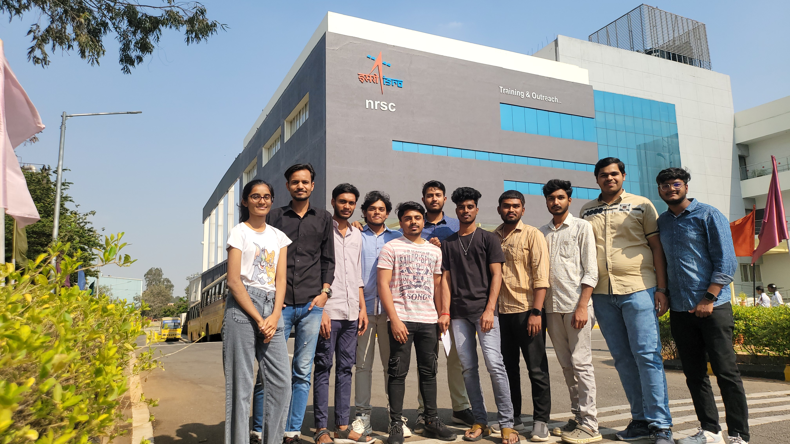

NRSC: Satellite Data Handling and Remote Sensing Applications for Disaster Management and Governance
NRSC(ISRO) Internship
Eligibility: Open to UG, PG, and PhD students/recent graduates within six months with a minimum 60% aggregate or CGPA of 6.32.
Duration: Minimum 45 days. And depends on guide of the internship.
Opening Hours
Location
Medak Rd, IDA Jeedimetla, Chintal, Jeedimetla, Hyderabad, TS 500055
India
Facility Features
Coffee

Food
About NRSC
Our Activities: National Remote Sensing Centre (NRSC) is one of the primary centres of Indian Space Research Organisation (ISRO), Department of Space (DOS). NRSC has the mandate for establishment of ground stations for receiving satellite data, generation of data products, dissemination to the users, development of techniques for remote sensing applications including disaster management support, geospatial services for good governance and capacity building for professionals, faculty and students.
- Main Campus at Balanagar, Hyderabad for Administration, Remote Sensing Applications and Aerial Services
- Campus at Shadnagar for Satellite Data Reception, Data Processing and Dissemination, Earth and Climate Studies and Disaster Management Support
- Five Regional Centres:
- Sector 9, KBHB in Jodhpur (Regional Centre-West)
- Sadhiknagar at New Delhi (Regional Centre-North)
- New Salt Lake City in Kolkata (Regional Centre-East)
- Amaravathy Road in Nagpur (Regional Centre-Central)
- Karthik Nagar in Bangalore (Regional Centre-South)
- Outreach facility at Jeedimetla in Hyderabad for providing training for professionals, faculty and students and for general outreach.
- Aircraft operations facility at Begumpet Airport, Hyderabad
Contact
Name: Smt Savitha Sunkari
Phone: (040) 2388-4808
Email: student@nrsc.gov.in
Website: www.nrsc.gov.in/Aboutus_NRSC
Social Media
 |
|